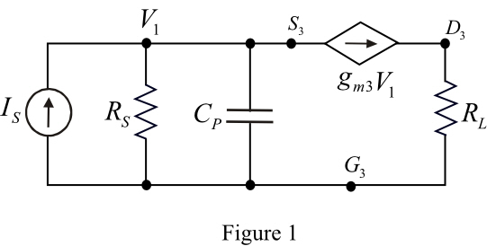
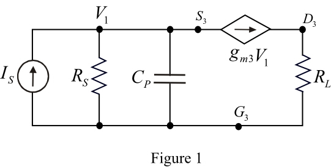

Refer to Figure 12.8 for a folded-cascode CMOS op-amp in the text book.
Draw the model circuit diagram for common-gate stage at transistor .
.

Refer to Figure 12.8 for a folded-cascode CMOS op-amp in the text book.
Draw the model circuit diagram for common-gate stage at transistor.

Apply Kirchhoff’s current law at top node in Figure 1.
The condition for frequency 3dB down is,
Thus, the pole that arises at the interface between first and second stages has a frequency is, .
Write the expression for phase margin.
Substitute for  in the equation.
in the equation.
Determine the largest value of can be expressed as a function of .
.
Substitute for in the equation.
Thus, the largest value of can be expressed as a function of is, .
is, .